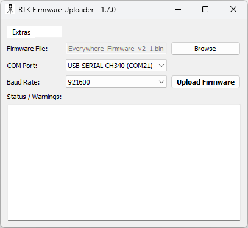
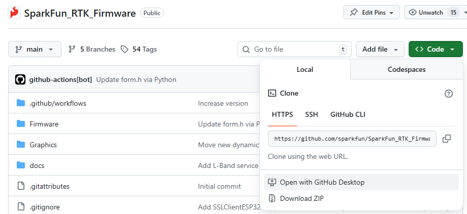
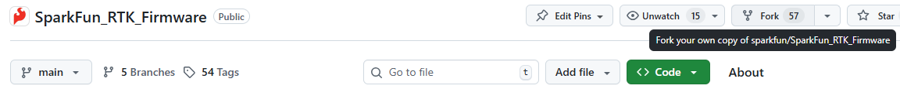
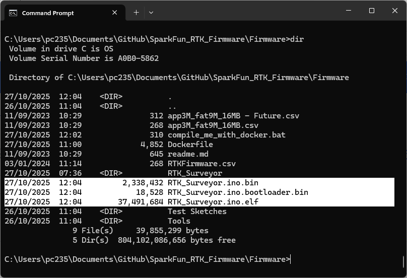
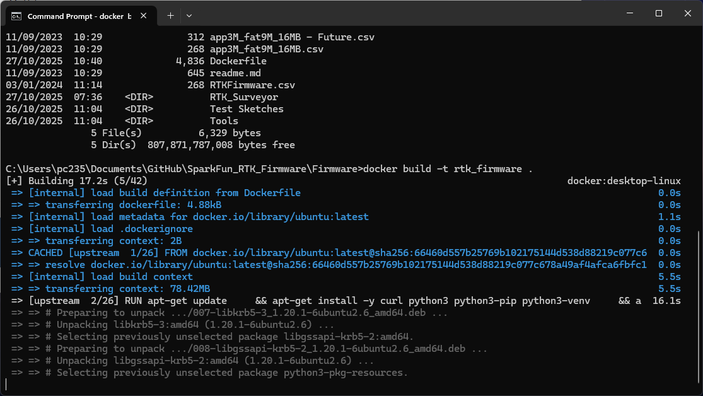
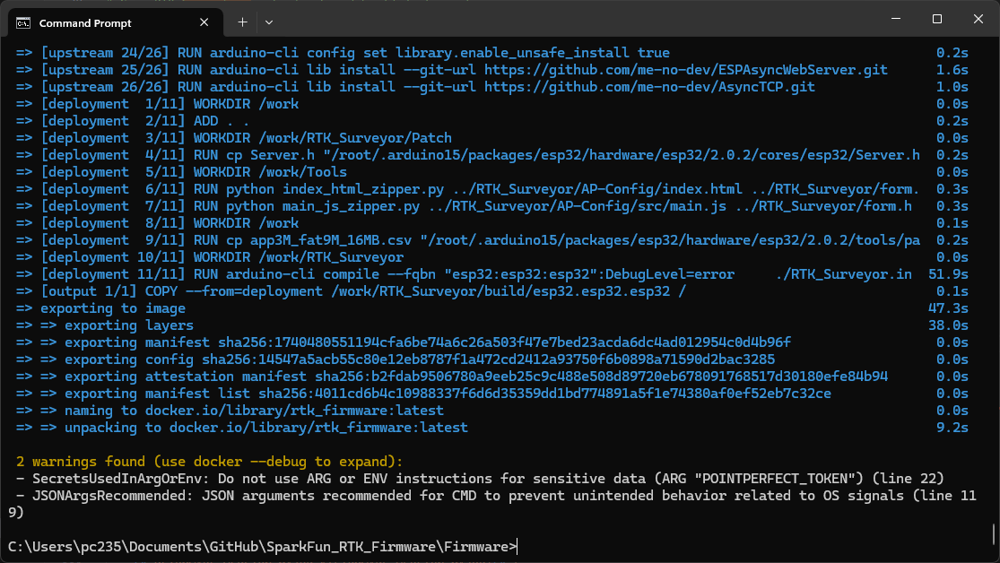
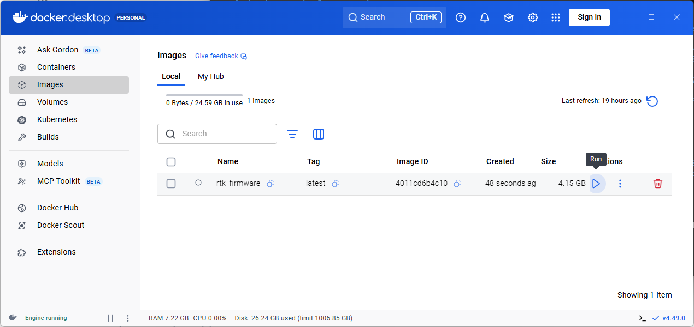
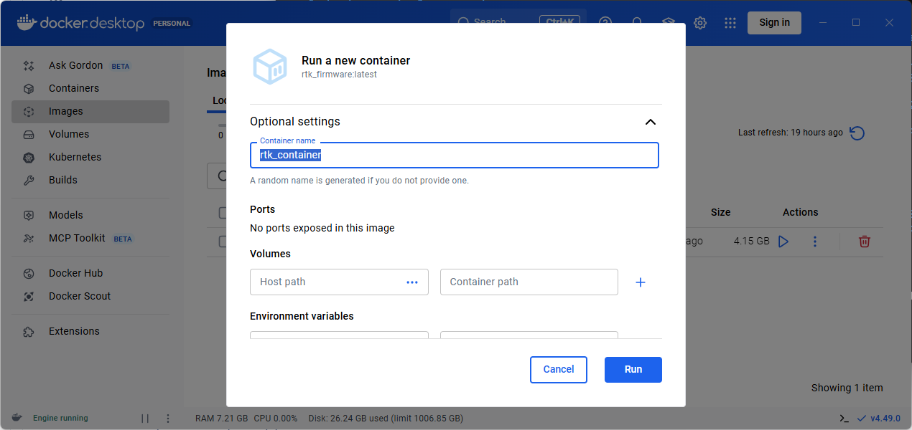
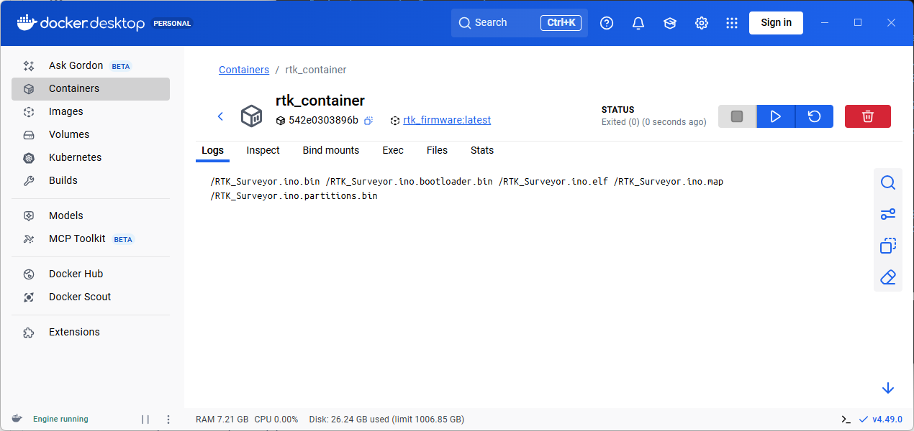

Updating RTK Firmware
Surveyor:  / Express:
/ Express:  / Express Plus:
/ Express Plus:  / Facet:
/ Facet:  / Facet L-Band:
/ Facet L-Band:  / Reference Station:
/ Reference Station: 
The device has two primary firmwares:
- Firmware on the ESP32 microcontroller. Keep reading.
- Firmware on the u-blox ZED-F9P, ZED-F9P, or NEO-D9S Receiver. See below.
The device firmware is displayed in a variety of places:
- Power On
- Serial Config Menu
- WiFi Config

RTK Express with firmware v3.0
During power-on, the display will show the current device Firmware.

Main Menu showing RTK Firmware v3.0-Jan 19 2023
The firmware is displayed when the main menu is opened over a serial connection.

WiFi Config page showing device firmware v2.7 and ZED-F9P firmware HPG 1.32
The firmware is shown at the top of the WiFi config page.
From time to time SparkFun will release new firmware for the RTK product line to add and improve functionality. For most users, firmware can be upgraded over WiFi using the OTA method.
- OTA Method: Connect over WiFi to SparkFun to download the latest firmware over-the-air. This can be done using the serial menu or while in WiFi AP Config Mode. Requires a local WiFi network.
- GUI Method: Use the Windows, Linux, MacOS or Python GUI and a USB cable. (The Python package has been tested on Raspberry Pi)
- SD Method: Load the firmware on an SD card, then use a serial terminal with the Firmware Upgrade menu
- WiFi Method: Load the firmware over WiFi when the device is in WiFi AP Config Mode
- CLI Method: Use the command line batch_program.bat
The OTA method is generally recommended. For more information see here.
Remember, all SparkFun RTK devices are open source hardware meaning you have total access to the firmware and hardware. Be sure to check out each repo for the latest firmware and hardware information.
Updating Firmware Over-The-Air

Updating the firmware via WiFi config page

Updating the firmware via Firmware serial menu
Introduced with version 3.0, firmware can be updated by pressing a button in the System Configuration section of the WiFi Config page, or over the Firmware menu of the serial interface. This makes checking and upgrading a unit very easy.
Additionally, users may opt into checking for Beta firmware. This is the latest firmware that may have new features and is meant for testing. Beta firmware is not recommended for units deployed into the field as it may not be stable.
If you have a device with firmware lower than v3.0, you will need to use the GUI or a method listed below to get to v3.x.
With version 3.10 automatic release firmware update is supported over WiFi. Enabling this feature is done using the serial firmware menu. The polling period is speified in minutes and defaults to once a day. The automatic firmware update only checks for and installs the current SparkFun released firmware versions over top of any:
- Older released versions (continual upgrade)
- Beta firmware versions (newer or older, restore to released version)
- Locally built versions (newer or older, restore to released version)
Updating Firmware Using The Uploader GUI

RTK Firmware GUI
This GUI makes it easy to point and click your way through a firmware update. There are versions for Windows, Linux, MacOS and a Python package installer.
The latest GUI release can be downloaded here.
Download the latest RTK firmware binary file located on the releases page or from the binaries repo.
To Use
- Attach the RTK device to your computer using a USB cable.
- Turn the RTK device on.
- On Windows, open the Device Manager to confirm which COM port the device is operating on. On other platforms, check
/dev.

Device Manager showing 'USB-Serial CH340' port on COM27
- Get the latest binary file located on the releases page or from the binaries repo.
- Run RTKUploader.exe (it takes a few seconds to start)
- Click Browse and select the binary file to upload
- Select the COM port previously seen in the Device Manager
- Click Upload Firmware
Once complete, the device will reset and power down.
If your RTK 'freezes' after the update, press Reset ESP32 to get it going again.
Updating Firmware From the SD Card

Firmware update taking place
Download the latest binary file located on the releases page or from the binaries repo.
The firmware upgrade menu will only display files that have the "RTK_Surveyor_Firmware*.bin" file name format so don't change the file names once loaded onto the SD card. Select the firmware you'd like to load and the system will proceed to load the new firmware, then reboot.
Note: The firmware is called RTK_Surveyor_Firmware_vXX.bin even though there are various RTK products (Facet, Express, Surveyor, etc). We united the different platforms into one. The RTK Firmware runs on all our RTK products.
Force Firmware Loading
In the rare event that a unit is not staying on long enough for new firmware to be loaded into a COM port, the RTK Firmware (as of version 1.2) has an override function. If a file named RTK_Surveyor_Firmware_Force.bin is detected on the SD card at boot that file will be used to overwrite the current firmware, and then be deleted. This update path is generally not recommended. Use the GUI or WiFi OTA methods as the first resort.
Updating Firmware From WiFi

Note: Firmware versions 1.1 to 1.9 have an issue that severely limits firmware upload over WiFi and is not recommended; use the GUI method instead. Firmware versions v1.10 and beyond support direct firmware updates via WiFi.
Firmware may be uploaded to the unit by clicking on 'Upload BIN', selecting the binary such as 'RTK_Surveyor_Firmware_v3_x.bin' and pressing upload. The unit will automatically reset once the firmware upload is complete.
Updating Firmware From CLI
The command-line interface is also available. Youll need to download the RTK Firmware Binaries repo. This repo contains the binaries but also various supporting tools including esptool.exe and the three binaries required along with the firmware (bootloader, partitions, and app0).
Windows
Connect a USB A to C cable from your computer to the ESP32 port on the RTK device. Turn the unit on. Now identify the COM port the RTK enumerated at. The easiest way to do this is to open the Device Manager:

CH340 is on COM6 as shown in Device Manager
If the COM port is not showing be sure the unit is turned On. If an unknown device is appearing, youll need to install drivers for the CH340. Once you know the COM port, open a command prompt (Windows button + r then type cmd).

batch_program.bat running esptool
Once the correct COM is identified, run 'batch_program.bat' along with the binary file name and COM port. For example batch_program.bat RTK_Surveyor_Firmware_v2_0.bin COM6. COM6 should be replaced by the COM port you identified earlier.
The batch file runs the following commands:
esptool.exe --chip esp32 --port COM6 --baud 921600 --before default_reset --after hard_reset write_flash -z --flash_mode dio --flash_freq 80m --flash_size detect 0x1000 ./bin/RTK_Surveyor.ino.bootloader.bin 0x8000 ./bin/RTK_Surveyor_Partitions_16MB.bin 0xe000 ./bin/boot_app0.bin 0x10000 ./RTK_Surveyor_Firmware_vxx.bin
Where COM6 is replaced with the COM port that the RTK product enumerated at and RTK_Surveyor_Firmware_vxx.bin is the firmware you would like to load.
Note: Some users have reported the 921600bps baud rate does not work. Decrease this to 115200 as needed.
Upon completion, your RTK device will reset and power down.
macOS / Linux
Get esptool.py. Connect a USB A to C cable from your computer to the ESP32 port on the RTK device. Turn the unit on. Now identify the COM port the RTK enumerated at.
If the COM port is not showing be sure the unit is turned On. If an unknown device is appearing, youll need to install drivers for the CH340. Once you know the COM port, run the following command:
py esptool.py --chip esp32 --port /dev/ttyUSB0 --baud 921600 --before default_reset --after hard_reset write_flash -z --flash_mode dio --flash_freq 80m --flash_size detect 0x1000 ./bin/RTK_Surveyor.ino.bootloader.bin 0x8000 ./bin/RTK_Surveyor_Partitions_16MB.bin 0xe000 ./bin/boot_app0.bin 0x10000 ./RTK_Surveyor_Firmware_vxx.bin
Where /dev/ttyUSB0 is replaced with the port that the RTK product enumerated at and RTK_Surveyor_Firmware_vxx.bin is the firmware you would like to load.
Note: Some users have reported the 921600bps baud rate does not work. Decrease this to 115200 as needed.
Upon completion, your RTK device will reset and power down.
Updating 4MB Surveyors
RTK Surveyors sold before September 2021 may have an ESP32 WROOM module with 4MB flash instead of 16MB flash. These units still support all the functionality of other RTK products with the following limitations:
- There is not enough flash space for OTA. Upgrading the firmware must be done via CLI or GUI. OTA, WiFi, or SD update paths are not possible.
The GUI (as of v1.3) will autodetect the ESP32's flash size and load the appropriate partition file. No user interaction is required.
If you are using the CLI method, be sure to point to the 4MB partition file. For example:
esptool.exe --chip esp32 --port COM6 --baud 921600 --before default_reset --after hard_reset write_flash -z --flash_mode dio --flash_freq 80m --flash_size detect 0x1000 ./bin/RTK_Surveyor.ino.bootloader.bin 0x8000 ./bin/**RTK_Surveyor_Partitions_4MB**.bin 0xe000 ./bin/boot_app0.bin 0x10000 ./RTK_Surveyor_Firmware_vxx.bin
Determining The Size of Flash
To determine if the device has a 4MB module:
- Use the esptool via CLI. Please see the flash_id command for usage.
- Use the GUI and attempt a firmware update. The output will auto-detect and show the flash size, as shown below:

Updating u-blox Firmware
The following products contain the following u-blox receivers:
- RTK Surveyor: ZED-F9P
- RTK Express: ZED-F9P
- RTK Express Plus: ZED-F9R
- RTK Facet: ZED-F9P
- RTK Facet L-Band: ZED-F9P and NEO-D9S
The firmware loaded onto the ZED-F9P, ZED-F9R, and NEO-D9S receivers is written by u-blox and can vary depending on the manufacture date. The RTK Firmware (that runs on the ESP32) is designed to flexibly work with any u-blox firmware. Upgrading the ZED-F9x/NEO-D9S is a good thing to consider but is not crucial to the use of RTK products.
Not sure what firmware is loaded onto your RTK product? Open the System Menu to display the module's current firmware version.
The firmware on u-blox devices can be updated using a Windows-based GUI or u-center. A CLI method is also possible using the ubxfwupdate.exe tool provided with u-center. Additionally, u-blox offers the source for the ubxfwupdate tool that is written in C. It is currently released only under an NDA so contact your local u-blox Field Applications Engineer if you need a different method.
Updating Using Windows GUI

SparkFun RTK u-blox Firmware Update Tool
The SparkFun RTK u-blox Firmware Update Tool is a simple Windows GUI and python script that runs the ubxfwupdate.exe tool. This allows users to directly update module firmware without the need for u-center. Additionally, this tool queries the module to verify that the firmware type matches the module. Because the RTK Facet L-Band contains two u-blox modules that both appear as identical serial ports, it can be difficult and perilous to know which port to load firmware. This tool prevents ZED-F9P firmware from being accidentally loaded onto a NEO-D9S receiver and vice versa.
The SparkFun RTK u-blox Firmware Update Tool will only run on Windows as it relies upon u-blox's ubxfwupdate.exe. The full, integrated executable for Windows is available here.
- Attach the RTK device's USB port to your computer using a USB cable
- Turn the RTK device on
- Open Device Manager to confirm which COM port the device is operating on

Device Manager showing USB Serial port on COM14
- Get the latest binary firmware file from the ZED Firmware, NEO Firmware folder, or the u-blox website
- Run RTK_u-blox_Update_GUI.exe (it takes a few seconds to start)
- Click the Firmware File Browse and select the binary file for the update
- Select the COM port previously seen in the Device Manager
- Click Update Firmware
Once complete, the u-blox module will restart.
Updating Using u-center
If you're familiar with u-center a tutorial with step-by-step instructions for locating the firmware version as well as changing the firmware can be found in How to Upgrade Firmware of a u-blox Receiver.
ZED-F9P Firmware Changes
This module is used in the Surveyor, Express, and Facet. It is capable of both Rover and base modes.
Most of these binaries can be found in the ZED Firmware/ZED-F9P folder.
All field testing and device-specific performance parameters were obtained with ZED-F9P v1.30.
-
v1.12 has the benefit of working with SBAS and an operational RTK status signal (the LED illuminates correctly). See release notes.
-
v1.13 has a few RTK and receiver performance improvements but introduces a bug that causes the RTK Status LED to fail when SBAS is enabled. See release notes.
-
v1.30 has a few RTK and receiver performance improvements, I2C communication improvements, and most importantly support for SPARTN PMP packets. See release notes.
-
v1.32 has a few SPARTN protocol-specific improvements. See release notes. This firmware is required for use with the NEO-D9S and the decryption of PMP messages.
ZED-F9R Firmware Changes
This module is used in the Express Plus. It contains an internal IMU and additional algorithms to support high-precision location fixes using dead reckoning. The ZED-F9R is not capable of operating in base mode.
Most of these binaries can be found in the ZED Firmware/ZED-F9R folder.
-
v1.00 Initial release.
-
v1.21 SPARTN support as well as adding E-scooter and robotic lawnmower dynamic models. See release notes.
NEO-D9S Firmware Changes
This module is used in the Facet L-Band to receive encrypted PMP messages over ~1.55GHz broadcast via a geosynchronous Inmarsat.
This binary file can be found in the NEO Firmware folder.
- v1.04 Initial release.
As of writing, no additional releases of the NEO-D9S firmware have been made.
Compiling Source
This is information about how to compile the RTK Firmware from source. This is for advanced users who would like to modify the functionality of the RTK products.
- How SparkFun does it
- Using Docker
- Compiling on Windows (Deprecated)
- Compiling on Ubuntu 20.04 (Deprecated)
How SparkFun does it
At SparkFun, we use GitHub Actions and a Workflow to compile each release of RTK Firmware. We run the compilation workflow directly on GitHub. A virtual ubuntu machine installs the Arduino CLI, installs the correct ESP32 Arduino core, patches the core in a couple of places, installs all the required libraries at the required version, converts the embedded HTML and Bootstrap JavaScript to binary zip format, and generates the firmware binary for the ESP32. That binary is either uploaded as an Artifact (by non-release-build) or pushed to the SparkFun RTK Firmware Binaries repo (by the compilation workflow).
You are welcome to clone or fork this repo and do the exact same thing yourself. But you may need a paid GitHub Pro account to run the GitHub Actions, especially if you keep your clone / fork private.
If you run the compilation workflow, it will compile the firmware and attempt to push the binary to the Binaries repo. This will fail as your account won't have the right permissions. The non-release-build is the one for you. The firmware binary will be attached as an Artifact to the workflow run. Navigate to Actions Non-Release Build, select the latest run of Non-Release Build, the binary is in the Artifacts.
You can then use (e.g.) the SparkFun RTK Firmware Uploader to upload the binary onto the ESP32.
Using Docker
Installing the correct version of the ESP32 core and of each required Arduino library, is tedious and error-prone. Especially on Windows. We've lost count of the number of times code compilation fails on our local machines, because we had the wrong ESP32 core installed, or forgot to patch Server.h... It is much easier to sandbox the firmware compilation using an environment like Docker.
Docker is open-source. It is our new favourite thing!
Here is a step-by-step guide for how to install Docker and compile the firmware from scratch:
Clone, fork or download the RTK Firmware repo
To build the RTK Firmware, you obviously need a copy of the source code.
If you are familiar with Git and GitHub Desktop, you can clone the RTK Firmware repo directly into GitHub Desktop:

If you want to contribute to the RTK Firmware, and already have a GitHub account, you can Fork the repo:

Clone your fork to your local machine, make changes, and send us a Pull Request. This is exactly what the SparkFun Team do when developing the code. Please use the release_candidate branch for any such changes. We are very unlikely to merge anything directly into main, unless it is (e.g.) docs corrections or improvements.
If you don't want to do either of those, you can simply Download a Zip copy of the repo instead. You will receive a complete copy as a Zip file. You can do this from the green Code button, or click on the icon below to download a copy of the main (released) branch:
For the real Wild West experience, you can also download a copy of the release_candidate code branch. This is where the team is actively changing and testing the code, before it becomes a full release. The code there will usually compile and will usually work, but we don't guarantee it! We may be part way through implementing some breaking changes at the time of your download...
Install Docker Desktop
- (Optional) Head to Docker and create an account. A free "Personal" account will cover occasional compilations of the firmware
- Download and install Docker Desktop - there are versions for Mac, Windows and Linux. You may need to restart to complete the installation.
- Run the Desktop
- You don't need to have an account and you don't need to be signed in
- You only need to be signed in if you want to store or share your Container on Docker Hub
- If you don't sign in, Docker Desktop will run in Personal mode - which will cover local compilations of the firmware
- On Windows, you may see an error saying "WSL needs updating Your version of Windows Subsystem for Linux (WSL) is too old". If you do:
- Open a command prompt
- Type
wsl --updateto update WSL. At the time of writing, this installs Windows Subsystem for Linux 2.6.1 - Restart the Docker Desktop
- If you are using Docker for the first time, the "What is a container?" and "How do I run a container?" demos are useful - but not essential
- On Windows, you may want to give Docker Desktop permission to access to your Network, so it can access (e.g.) HTML ports
- You can Stop the container and Delete it when you are done
- You may want to prevent Docker from running when your machine starts up
- Uncheck "Start Docker Desktop when you sign in to your computer" in the Desktop settings
Using Docker to create the firmware binary
- Make sure you have Docker Desktop running. You don't need to be signed in, but it needs to be running.
- Open a Command Prompt and
cdinto the SparkFun_RTK_Firmware folder - Check you are in the right place. Type
dirand hit enter. You should see the following files and folders:
cd Firmwareand thendiragain. You should see:
-
The file that does most of the work is the
Dockerfile -
But, if you're short on time, run
compile_with_docker.bat. It does everything for you:

- Hey presto! You have your newly compiled firmware binary!
You can then use (e.g.) the SparkFun RTK Firmware Uploader to upload the binary onto the ESP32.
Running the Dockerfile manually
If you want to see and understand what's going on under the hood with the Dockerfile, Image and Container:
Here is how to perform each step manually:
- To begin, run the Dockerfile. Type:
You should see:


- If you want to see the full build progress including the output of echo or ls, use:
- If you want to rebuild the image completely from scratch, without using the cache, use:
Building the full Image from scratch is slow, taking several minutes. You should only need to do it once - unless you make any changes to the Dockerfile.
- When you make changes to the source code and want to recompile, use:
This uses the cache for the upstream stage and avoids recreating the full ubuntu machine. But it ignores the cache for the deployment stage, ensuring the code is recompiled.
Access the firmware binary by running the Image
In Docker Desktop, in the Images tab, you should now be able to see an Image named rtk_firmware. We now need to Run that Image to access the firmware binary. Click the triangular Run icon under Actions:

Running the Image will create a Container, through which we can access the output of the arduino-cli code compilation.
By default, the Container name is random. To avoid this, we define one in the Optional settings :

Run the Container and you should see:

In the Command Prompt, type the following :
Hey presto! A file called RTK_Surveyor.ino.bin appears in the current directory. That's the firmware binary we are going to upload to the ESP32.

If you need the .elf file so you can debug code crashes with me-no-dev's ESP ExceptionDecoder:
If you need the .bootloader.bin file so you can upload it with esptool:
If you want the files to appear in a more convenient directory, replace the single . with a folder path.
Delete the rtk_container container afterwards, to save disk space and so you can reuse the same container name next time. If you forget, you will see an error:
Conflict. The container name "/rtk_container" is already in use by container. You have to remove (or rename) that container to be able to reuse that name.
- Remember: when you make changes to the source code and want to recompile, use:
Shortcut: compile_with_docker.bat
Shortcut: the compile_with_docker.bat batch file does everything for you:
docker build -t rtk_firmware --no-cache-filter deployment .
docker create --name=rtk_container rtk_firmware:latest
docker cp rtk_container:/RTK_Surveyor.ino.bin .
docker cp rtk_container:/RTK_Surveyor.ino.elf .
docker cp rtk_container:/RTK_Surveyor.ino.bootloader.bin .
docker container rm rtk_container
Changing the build properties
Changing the build properties: if you want to change the build properties and (e.g.) include your own PointPerfect token, paste the following into a .bat file or shell script:
docker build -t rtk_firmware --no-cache-filter deployment^
--build-arg FIRMWARE_VERSION_MAJOR=99^
--build-arg FIRMWARE_VERSION_MINOR=99^
--build-arg POINTPERFECT_TOKEN="0xe0,0x9c,<<=YOUR TOKEN IN C HEX FORMAT=>>,0x70,0x00"^
--build-arg ENABLE_DEVELOPER=false^
--build-arg DEBUG_LEVEL=none^
.
docker create --name=rtk_container rtk_firmware:latest
docker cp rtk_container:/RTK_Surveyor.ino.bin .
docker cp rtk_container:/RTK_Surveyor.ino.elf .
docker cp rtk_container:/RTK_Surveyor.ino.bootloader.bin .
docker container rm rtk_container
Compiling on Windows (Deprecated)
Note: we recommend using the Docker method. It is far easier and much less error-prone...
The SparkFun RTK Firmware can be compiled using the Arduino IDE (currently v1.8.19). To compile:
-
Install Arduino.
-
Install ESP32 for Arduino. Here are some good instructions for installing it via the Arduino Boards Manager. Note: Use v2.0.2 of the core. Note: We use the 'ESP32 Dev Module' for pin numbering. Select the correct board under Tools->Board->ESP32 Arduino->ESP32 Dev Module.
-
Change the Partition table. Replace
C:\Users\\[user name]\AppData\Local\Arduino15\packages\esp32\hardware\esp32\2.0.2\tools\partitions\app3M_fat9M_16MB.csvwith the app3M_fat9M_16MB.csv file found in the Firmware folder. This will increase the program partition from a maximum of 1.9MB to 3MB.
-
From the Arduino IDE, set the core settings from the Tools menu:
A. Set the 'Partition Scheme' to 16M Flash (3MB APP/9MB FATFS). This will use the 'app3M_fat9M_16MB.csv' updated partition table.
B. Set the 'Flash Size' to 16MB (128mbit)
-
Obtain all the required libraries.
-
Patch
Server.hin the ESP core: copyServer.hfrom theRTK_Surveyor\Patchfolder and replace:
- Update the web config
form.hby running the two python scripts in theToolsfolder:
python index_html_zipper.py ../RTK_Surveyor/AP-Config/index.html ../RTK_Surveyor/form.h
python main_js_zipper.py ../RTK_Surveyor/AP-Config/src/main.js ../RTK_Surveyor/form.h
Once compiled, firmware can be uploaded directly to a unit when the RTK unit is on and the correct COM port is selected under the Arduino IDE Tools->Port menu.
If you are seeing the error:
text section exceeds available space ...
You have not replaced the partition file correctly. See the 'Change Partition table' step inside the Windows instructions.
Note: There are a variety of compile guards (COMPILE_WIFI, COMPILE_AP, etc) at the top of RTK_Surveyor.ino that can be commented out to remove them from compilation. This will greatly reduce the firmware size and allow for faster development of functions that do not rely on these features (serial menus, system configuration, logging, etc).
Required Libraries
Note: You should click on the link next to each of the #includes at the top of RTK_Surveyor.ino within the Arduino IDE to open the library manager and download them. Getting them directly from Github also works but may not be 'official' releases.
Using the library manager in the Arduino IDE, for each of the libraries below:
1. Locate the library by typing the libary name into the search box
2. Click on the library
3. Select the version listed in the compile-rtk-firmware.yml file for the [main](https://github.com/sparkfun/SparkFun_RTK_Firmware/blob/main/.github/workflows/compile-rtk-firmware.yml) or the [release_candidate](https://github.com/sparkfun/SparkFun_RTK_Firmware/blob/release_candidate/.github/workflows/compile-rtk-firmware.yml) branch
4. Click on the Install button in the lower right
The RTK firmware requires the following libraries:
* [Arduino JSON @ 6.19.4](https://github.com/bblanchon/ArduinoJson)
* [ESP32Time @ 2.0.0](https://github.com/fbiego/ESP32Time)
* [ESP32 BleSerial @ 1.0.5](https://github.com/avinabmalla/ESP32_BleSerial)
* [ESP32-OTA-Pull @ 1.0.0](https://github.com/mikalhart/ESP32-OTA-Pull)
* Ethernet @ 2.0.2
* [JC_Button @ 2.1.2](https://github.com/JChristensen/JC_Button)
* [PubSub Client for MQTT @ 2.8.0](https://github.com/knolleary/pubsubclient)
* [SdFat @ 2.1.1](https://github.com/greiman/SdFat)
* [SparkFun LIS2DH12 Arduino Library @ 1.0.3](https://github.com/sparkfun/SparkFun_LIS2DH12_Arduino_Library)
* [SparkFun MAX1704x Fuel Gauge Arduino Library @ 1.0.4](https://github.com/sparkfun/SparkFun_MAX1704x_Fuel_Gauge_Arduino_Library)
* [SparkFun u-blox GNSS v3 @ 3.0.14](https://github.com/sparkfun/SparkFun_u-blox_GNSS_v3)
* [SparkFun_WebServer_ESP32_W5500 @ 1.5.5](https://github.com/SparkFun/SparkFun_WebServer_ESP32_W5500)
* [SparkFun Qwiic OLED Arduino Library @ 1.0.13](https://github.com/sparkfun/SparkFun_Qwiic_OLED_Arduino_Library)
* [SSL CLient ESP32 @ 2.0.0](https://github.com/alkonosst/SSLClientESP32)
The following libraries are only available via GitHub:
* [AsyncTCP](https://github.com/me-no-dev/AsyncTCP) (not available via library manager)
* [ESPAsyncWebServer](https://github.com/me-no-dev/ESPAsyncWebServer) (not available via library manager)
Compiling on Ubuntu 20.04 (Deprecated)
Virtual Machine
Execute the following commands to create the Linux virtual machine:
-
Using a browser, download the Ubuntu 20.04 Desktop image
-
virtualbox
- Click on the new button
- Specify the machine Name, e.g.: Sparkfun_RTK_20.04
- Select Type: Linux
- Select Version: Ubuntu (64-bit)
- Click the Next> button
- Select the memory size: 7168
- Click the Next> button
- Click on Create a virtual hard disk now
- Click the Create button
- Select VDI (VirtualBox Disk Image)
- Click the Next> button
- Select Dynamically allocated
- Click the Next> button
- Select the disk size: 128 GB
- Click the Create button
- Click on Storage
- Click the empty CD icon
- On the right-hand side, click the CD icon
- Click on Choose a disk file...
- Choose the ubuntu-20.04... iso file
- Click the Open button
- Click on Network
- Under 'Attached to:' select Bridged Adapter
- Click the OK button
- Click the Start button
-
Install Ubuntu 20.04
-
Log into Ubuntu
-
Click on Activities
-
Type terminal into the search box
-
Optionally install the SSH server
-
In the terminal window
- sudo apt install -y net-tools openssh-server
- ifconfig
Write down the IP address
-
On the PC
- ssh-keygen -t rsa -f ~/.ssh/Sparkfun_RTK_20.04
- ssh-copy-id -o IdentitiesOnly=yes -i ~/.ssh/Sparkfun_RTK_20.04 <username>@<IP address>
- ssh -Y <username>@<IP address>
-
Build Environment
Execute the following commands to create the build environment for the SparkFun RTK Firmware:
- sudo adduser $USER dialout
-
sudo shutdown -r 0
Reboot to ensure that the dialout privilege is available to the user
-
sudo apt update
- sudo apt install -y git gitk git-cola minicom python3-pip
- sudo pip3 install pyserial
- mkdir ~/SparkFun
- mkdir ~/SparkFun/esptool
- cd ~/SparkFun/esptool
- git clone https://github.com/espressif/esptool .
- cd ~/SparkFun
-
nano serial-port.sh
Insert the following text into the file:
-
chmod +x serial-port.sh
-
nano new-firmware.sh
Insert the following text into the file:
#!/bin/bash # new-firmware.sh # # Shell script to load firmware into the RTK Express via the ESP32 port # # Parameters: # 1: ttyUSBn # 2: Firmware file # sudo python3 ~/SparkFun/RTK_Binaries/Uploader_GUI/esptool.py --chip esp32 --port /dev/$1 --baud 921600 --before default_reset --after hard_reset write_flash -z --flash_mode dio --flash_freq 80m --flash_size detect \ 0x1000 ~/SparkFun/RTK_Binaries/bin/RTK_Surveyor.ino.bootloader.bin \ 0x8000 ~/SparkFun/RTK_Binaries/bin/RTK_Surveyor_Partitions_16MB.bin \ 0xe000 ~/SparkFun/RTK_Binaries/bin/boot_app0.bin \ 0x10000 $2 -
chmod +x new-firmware.sh
-
nano new-firmware-4mb.sh
Insert the following text into the file:
#!/bin/bash # new-firmware-4mb.sh # # Shell script to load firmware into the 4MB RTK Express via the ESP32 port # # Parameters: # 1: ttyUSBn # 2: Firmware file # sudo python3 ~/SparkFun/RTK_Binaries/Uploader_GUI/esptool.py --chip esp32 --port /dev/$1 --baud 921600 --before default_reset --after hard_reset write_flash -z --flash_mode dio --flash_freq 80m --flash_size detect \ 0x1000 ~/SparkFun/RTK_Binaries/bin/RTK_Surveyor.ino.bootloader.bin \ 0x8000 ~/SparkFun/RTK_Binaries/bin/RTK_Surveyor_Partitions_4MB.bin \ 0xe000 ~/SparkFun/RTK_Binaries/bin/boot_app0.bin \ 0x10000 $2 -
chmod +x new-firmware-4mb.sh
Get the SparkFun RTK Firmware sources
-
mkdir ~/SparkFun/RTK
- cd ~/SparkFun/RTK
-
git clone https://github.com/sparkfun/SparkFun_RTK_Firmware .
Get the SparkFun RTK binaries
-
mkdir ~/SparkFun/RTK_Binaries
- cd ~/SparkFun/RTK_Binaries
-
git clone https://github.com/sparkfun/SparkFun_RTK_Firmware_Binaries.git .
Install the Arduino IDE
-
mkdir ~/SparkFun/arduino
- cd ~/SparkFun/arduino
- wget https://downloads.arduino.cc/arduino-1.8.15-linux64.tar.xz
- tar -xvf ./arduino-1.8.15-linux64.tar.xz
- cd arduino-1.8.15/
-
sudo ./install.sh
Add the ESP32 support
-
Arduino
- Click on File in the menu bar
- Click on Preferences
- Go down to the Additional Boards Manager URLs text box
- Only if the textbox already has a value, go to the end of the value or values and add a comma
- Add the link: https://raw.githubusercontent.com/espressif/arduino-esp32/gh-pages/package_esp32_index.json
- Note the value in Sketchbook location
- Click the OK button
- Click on File in the menu bar
- Click on Quit
Get the required external libraries, then add to the Sketchbook location from above
-
cd ~/Arduino/libraries
- mkdir AsyncTCP
- cd AsyncTCP/
- git clone https://github.com/me-no-dev/AsyncTCP.git .
- cd ..
- mkdir ESPAsyncWebServer
- cd ESPAsyncWebServer
-
git clone https://github.com/me-no-dev/ESPAsyncWebServer .
Connect the Config ESP32 port of the RTK to a USB port on the computer
-
ls /dev/ttyUSB*
Enable the libraries in the Arduino IDE
-
Arduino
- From the menu, click on File
- Click on Open...
- Select the ~/SparkFun/RTK/Firmware/RTK_Surveyor/RTK_Surveyor.ino file
- Click on the Open button
Select the ESP32 development module
- From the menu, click on Tools
- Click on Board
- Click on Board Manager
- Click on esp32
- Select version 2.0.2
- Click on the Install button in the lower right
- Close the Board Manager...
- From the menu, click on Tools
- Click on Board
- Click on ESP32 Arduino
- Click on ESP32 Dev Module
Load the required libraries
- From the menu, click on Tools
- Click on Manage Libraries
-
For each of the following libraries:
- Locate the library
- Click on the library
- Select the version listed in the compile-rtk-firmware.yml file for the main or the release_candidate branch
- Click on the Install button in the lower right
Library List:
- ArduinoJson
- ESP32Time
- ESP32-OTA-Pull
- ESP32_BleSerial
- Ethernet
- JC_Button
- MAX17048 - Used for Test Sketch/Batt_Monitor
- PubSubClient
- SdFat
- SparkFun LIS2DH12 Arduino Library
- SparkFun MAX1704x Fuel Gauge Arduino Library
- SparkFun Qwiic OLED Graphics Library
- SparkFun u-blox GNSS v3
- SparkFun_WebServer_ESP32_W5500
-
Click on the Close button
Select the terminal port
- From the menu, click on Tools
- Click on Port, Select the port that was displayed in step 38 above
- Select /dev/ttyUSB0
- Click on Upload Speed
- Select 230400
Setup the partitions for the 16 MB flash
- From the menu, click on Tools
- Click on Flash Size
- Select 16MB
- From the menu, click on Tools
- Click on Partition Scheme
- Click on 16M Flash (3MB APP/9MB FATFS)
- From the menu click on File
- Click on Quit
-
cd ~/SparkFun/RTK/
- cp Firmware/app3M_fat9M_16MB.csv ~/.arduino15/packages/esp32/hardware/esp32/2.0.2/tools/partitions/app3M_fat9M_16MB.csv
Arduino CLI
The firmware can be compiled using Arduino CLI. This makes compilation fairly platform independent and flexible. All release candidates and firmware releases are compiled using Arduino CLI using a github action. You can see the source of the action here, and use it as a starting point for Arduino CLI compilation.
This is the same method the Dockerfile uses - using arduino-cli on a virtual ubuntu machine.